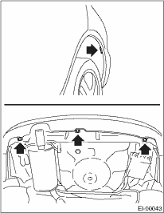
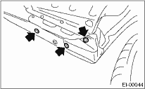
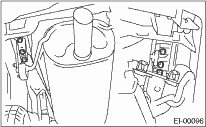
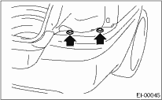
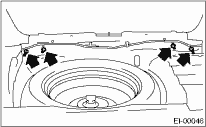
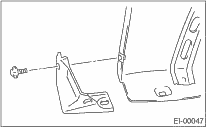
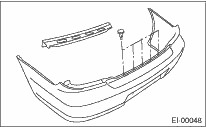
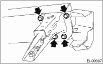

1. Disconnect the ground cable from the battery.
2. Remove the bolt and clip.

3. Remove the clip from the bumper and bracket.

4. When removing the rear bumper beam assembly, remove the six bolts from bumper stay.

5. Remove the rear combination light assembly on both sides. 
6. Remove the two clips on both sides.

7. Remove the floor box.
8. Remove the rear skirt trim.
9. Remove four nuts to remove the rear bumper.

NOTE:
Rear bumper beam assembly is heavy. When removing the rear bumper beam assembly, two persons are necessary to do the work.
10. Remove the bolts, and then remove the bracket from bumper.

11. Remove the clips to remove the bumper upper beam.

12. Remove the four bolts, and then remove the side bracket and bumper stay.
